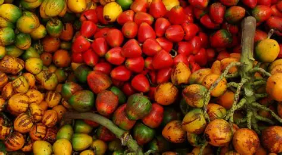

Amazonas

Informacion
El Amazonas es un departamento ubicado en el sur de Colombia, conocido por su vasta biodiversidad y su importancia ecológica.
Es hogar de una gran variedad de flora y fauna, incluyendo muchas especies endémicas. La región es atravesada por el río
Amazonas, uno de los ríos más largos y caudalosos del mundo. La cultura indígena es una parte integral del Amazonas, con numerosas
comunidades que mantienen sus tradiciones y formas de vida ancestrales. El ecoturismo es una actividad creciente en la zona, atrayendo
a visitantes interesados en explorar la selva tropical y aprender sobre las culturas indígenas.
Comida Típica
La gastronomía del Amazonas colombiano es rica y variada, influenciada por las tradiciones indígenas y los recursos naturales de la región.
Algunos platos típicos incluyen:
- Juane: Un plato tradicional hecho con arroz, carne (generalmente pollo), huevo, aceitunas y especias, envuelto en hojas de bijao y cocido al vapor.
- Mojojoy: Larvas comestibles que se consumen fritas o asadas, consideradas una delicia en la región.
- Pirarucú: Un pez de gran tamaño que se prepara de diversas formas, como a la parrilla o en sopas.
- Chontaduro: Una fruta típica que se consume cocida y se acompaña con miel o sal.

- Tucupí: Una salsa hecha a base de yuca fermentada, utilizada para acompañar diversos platos.
Turismo
El Amazonas colombiano ofrece una variedad de atractivos turísticos para los visitantes interesados en la naturaleza y la
cultura indígena. Algunos de los principales destinos turísticos incluyen:
- Leticia: La capital del departamento y punto de entrada al Amazonas, conocida por su mercado de artesanías y su
proximidad a la selva.
.webp)
- Parque Nacional Natural Amacayacu: Un área protegida que alberga una gran diversidad de flora y fauna, ideal para el
ecoturismo y la observación de aves.
- Isla de los Micos: Una isla en el río Amazonas donde los visitantes pueden interactuar con monos en su hábitat natural.
- Comunidades Indígenas: Visitar comunidades indígenas como los Ticuna, Yagua y Huitoto para aprender sobre sus
tradiciones, artesanías y formas de vida.
- Río Amazonas: Realizar paseos en bote por el río Amazonas para explorar la selva, observar la fauna y disfrutar del
paisaje único de la región.
.webp)
Economia
La economía del Amazonas colombiano está principalmente basada en actividades como la agricultura, la pesca, el ecoturismo y
la explotación sostenible de recursos naturales. La agricultura de subsistencia es común entre las comunidades
indígenas, quienes cultivan productos como yuca, plátano, maíz y frutas tropicales. La pesca es otra actividad importante,
tanto para el consumo local como para la venta en mercados regionales. El ecoturismo ha crecido en los últimos años, atrayendo a
visitantes interesados en la biodiversidad y la cultura indígena de la región. Además, existen iniciativas para la explotación
sostenible de recursos como la madera y productos no maderables de la selva, buscando equilibrar el desarrollo económico con la
conservación del medio ambiente.